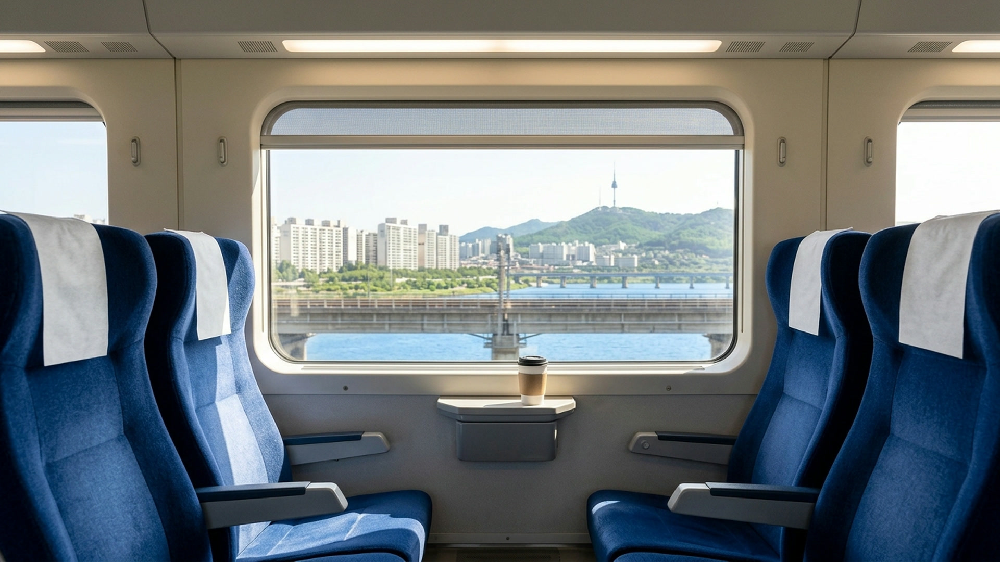
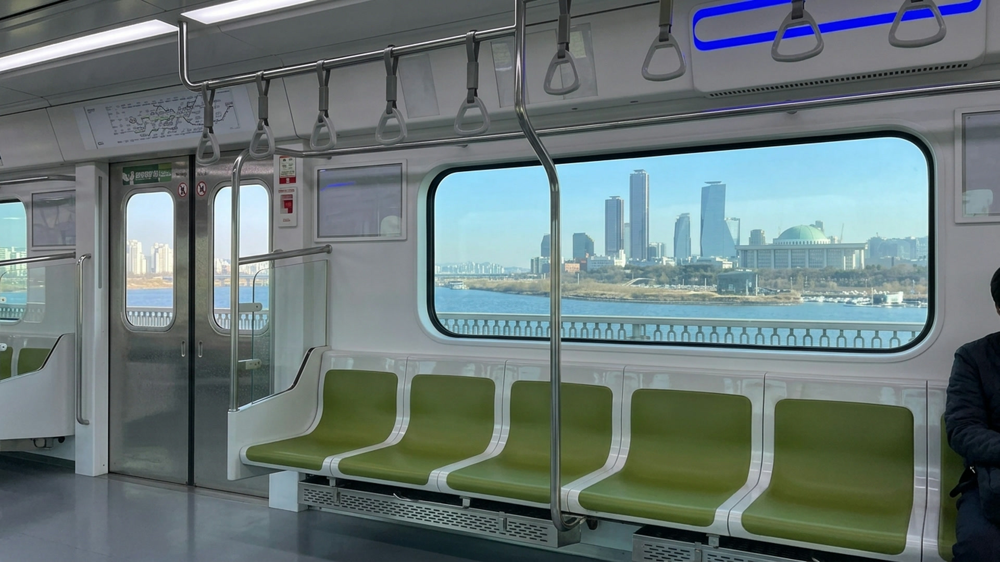
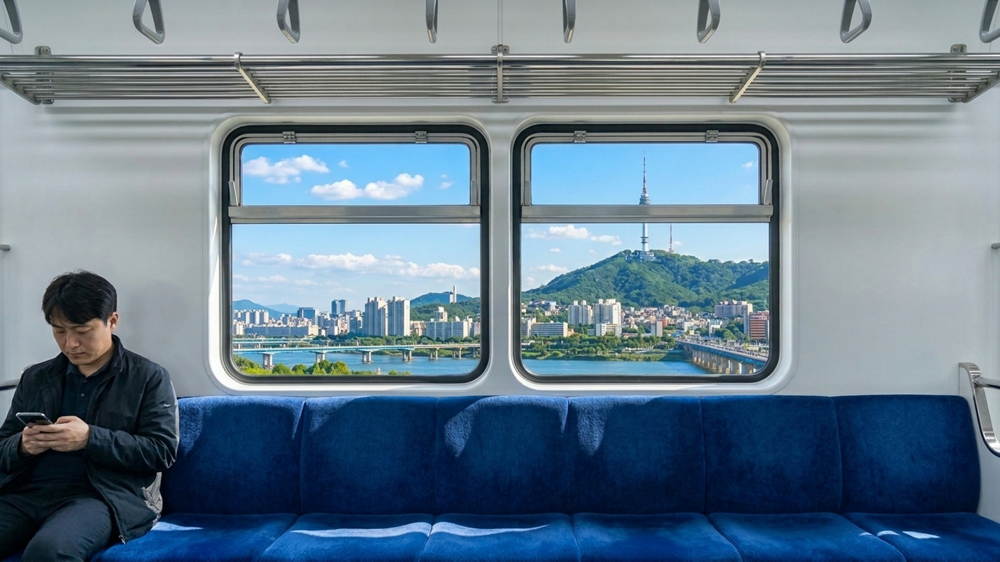
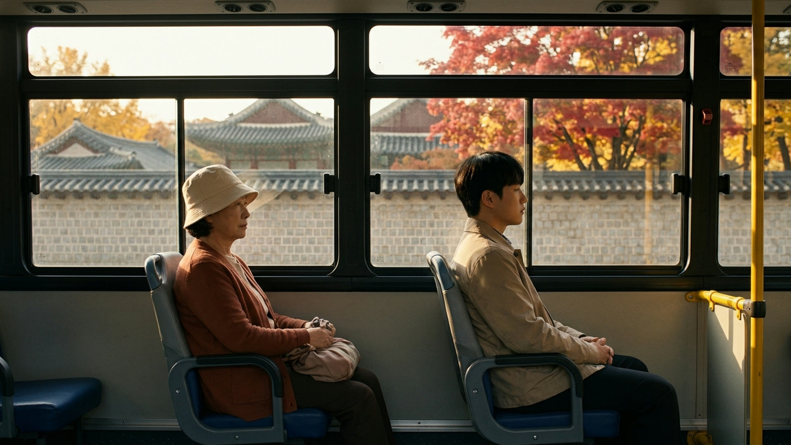
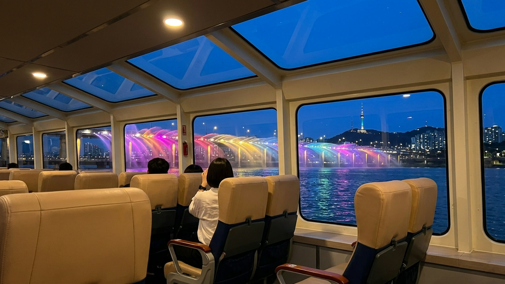
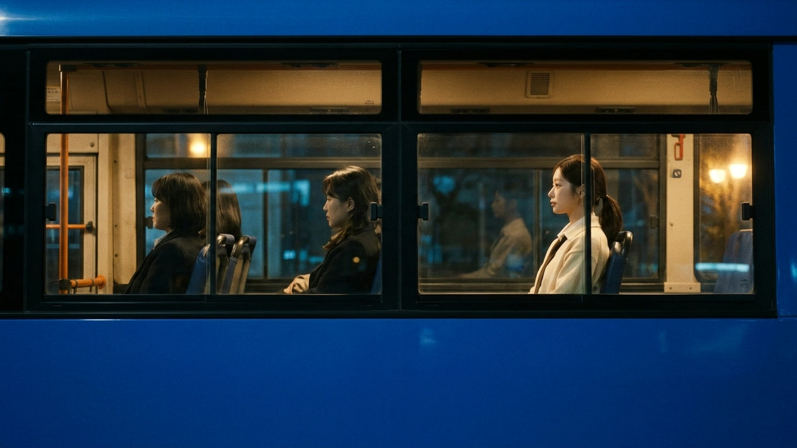
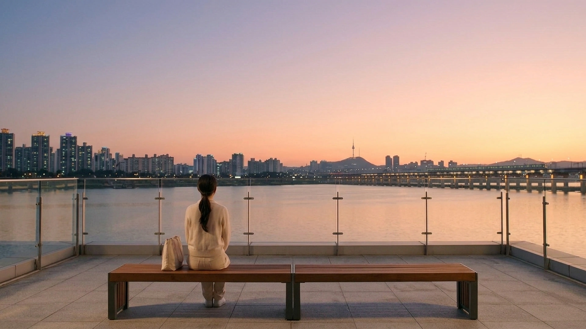

V.0.6.00 · 24시간 10개 시간대 수미상관 (57.04초)
1920×1080 (16:9 가로형 평면 창가 프레임)
새벽 ➔ 아침 ➔ 오전 ➔ 점심 ➔ 오후 ➔ 저녁 ➔ 매직아워 ➔ 밤 ➔ 심야버스 ➔ 다시 새벽
『새벽부터 다시 새벽까지 — 언제 찾아와도 서울은 안전하게 여러분을 환영합니다』
“평평한 차창 프레임 속 창가에 앉은 사람들의 평온한 시간 — 새벽 첫차부터 한낮의 고궁, 물 위의 노을, 깊은 심야버스와 다시 밝아오는 새벽까지 서울의 24시간은 언제나 안전하게 열려 있습니다.”
CUT 01
🕒 ① 새벽 (05:00)
새벽 첫 지하철 · 파란 7인석 직물 롱시트 평면 창가
감정: calm
📐 Frame A · 시간대 도입 평면 프레임

새벽 첫 지하철 파란 7인석 롱시트 — 차분한 실내 조명 속 좌석에 앉은 이지원과 승객들
✨ Frame B · 시간대 빛·풍경 완성본 (클릭 시 1920×1080 원본)

이지원이 미소 지으며 고개를 들어 창밖으로 밝아오는 서울의 첫 여명을 바라봄
CUT 02
🕒 ② 아침 (08:00)
아침 KTX·SRT 서울 진입 · 네이비 시트 하얀 헤드커버 평면 창가
감정: curious
📐 Frame A · 시간대 도입 평면 프레임

정면 평면 KTX 라운드 창틀·네이비 시트 하얀 헤드커버·미니 테이블 커피컵·아침 안개 들판
✨ Frame B · 시간대 빛·풍경 완성본 (클릭 시 1920×1080 원본)

KTX가 한강철교에 들어서며 평평한 창문 가득 푸른 한강과 남산서울타워가 활짝 열림
CUT 03
🕒 ③ 아침과 점심 사이 (10:30)
지하철 2호선 당산철교 · 연두색 롱시트 & 철교 하단 난간 평면 창
감정: happy
✨ Frame B · 시간대 빛·풍경 완성본 (클릭 시 1920×1080 원본)

평평한 2호선 통창 너머 깊고 푸른 한강·국회의사당 민트 돔·여의도 빌딩숲이 선명히 펼쳐짐
CUT 04
🕒 ④ 점심 (12:30)
한낮 지상 전철 · 상단 개폐창 바 2연속 평면 창틀 & 착석 승객
감정: happy
📐 Frame A · 시간대 도입 평면 프레임

정면 평면 2연속 전철 창(상단 1/4 개폐창 바) + 파란 롱시트 끝자리 착석 승객 + 낮 남산
✨ Frame B · 시간대 빛·풍경 완성본 (클릭 시 1920×1080 원본)

2연속 평면 창틀 가득 쾌청한 정오 하늘·뭉게구름·초록 남산서울타워·한강 교량 파노라마
CUT 05
🕒 ⑤ 점심과 저녁 사이 (15:30)
오후 서울 시내버스 · 검은 2분할 미닫이 평면 옆창에 나란히 앉은 승객들
감정: happy
✨ Frame B · 시간대 빛·풍경 완성본 (클릭 시 1920×1080 원본)

따스한 오후 햇살이 버스 창가 승객들과 창밖 경복궁 기와지붕·진홍빛 단풍을 환하게 비춤
CUT 06
🕒 ⑥ 저녁 (17:40)
저녁 한강 지하철 · 평면 상단 개폐창 프레임과 수직 황금 석양 빛기둥
감정: whisper
✨ Frame B · 시간대 빛·풍경 완성본 (클릭 시 1920×1080 원본)

붉게 타오르는 저녁 노을 구름과 63빌딩 실루엣 아래 한강을 수직으로 가르는 황금 빛기둥
CUT 07
🕒 ⑦ 저녁과 밤 사이 (18:40)
매직아워 여의도 한강버스 · 크림 창틀·천장 스카이라이트 창가 승객과 무지개분수
감정: calm
📐 Frame A · 시간대 도입 평면 프레임

한강버스 천장 스카이라이트 창·크림 창틀·연베이지 가죽 시트 창가 승객과 푸른 매직아워 강물
✨ Frame B · 시간대 빛·풍경 완성본 (클릭 시 1920×1080 원본)

물결 눈높이 선실 창밖으로 반포대교 달빛무지개분수의 오색 물줄기와 남산타워 야경이 펼쳐짐
CUT 08
🕒 ⑧ 밤 (21:00)
평온한 한강 야간 산책 · 노란 아치 수평 야경 프레임 & 핑크 해치 백참
감정: happy
✨ Frame B · 시간대 빛·풍경 완성본 (클릭 시 1920×1080 원본)

밝고 안전한 밤 산책로를 걷는 이지원의 숄더백에 귀여운 핑크 해치 백참이 일상 소품처럼 스침
CUT 09
🕒 ⑨ 밤에서 새벽 사이 (01:30)
서울 심야버스(N버스) · 밖에서 평평하게 들여다본 불 켜진 사각 차창 속 승객들
감정: whisper
✨ Frame B · 시간대 빛·풍경 완성본 (클릭 시 1920×1080 원본)

불 켜진 심야버스 평면 유리창 안 파란 시트 창가에 평온히 기대 앉아 귀가하는 이지원과 시민들
CUT 10
🕒 ⑩ 다시, 새벽 (05:00)
새벽 여명의 한강 수변 벤치 · 수평 난간 프레임과 비워둔 환영의 옆자리
감정: happy
✨ Frame B · 시간대 빛·풍경 완성본 (클릭 시 1920×1080 원본)

비워둔 환영의 옆자리 너머 한강과 남산 위로 따스한 분홍·황금빛 새벽 일출 여명이 밝아옴